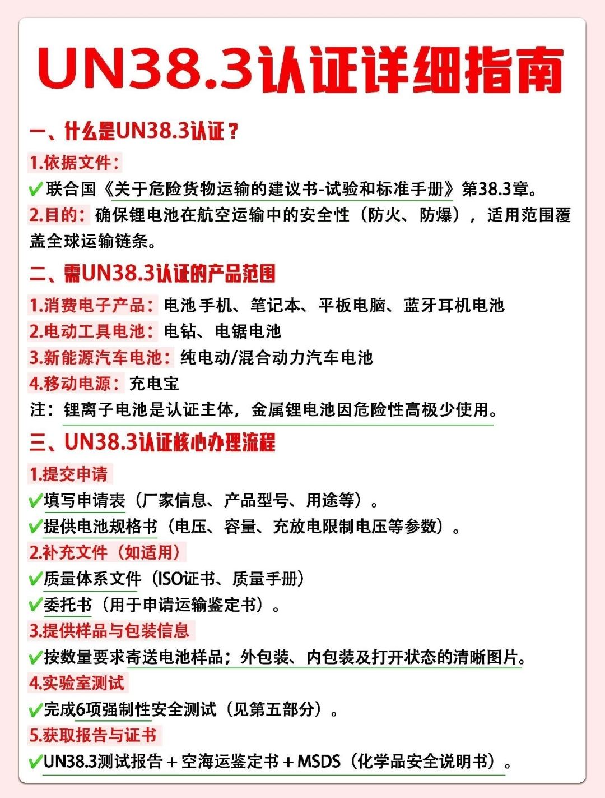
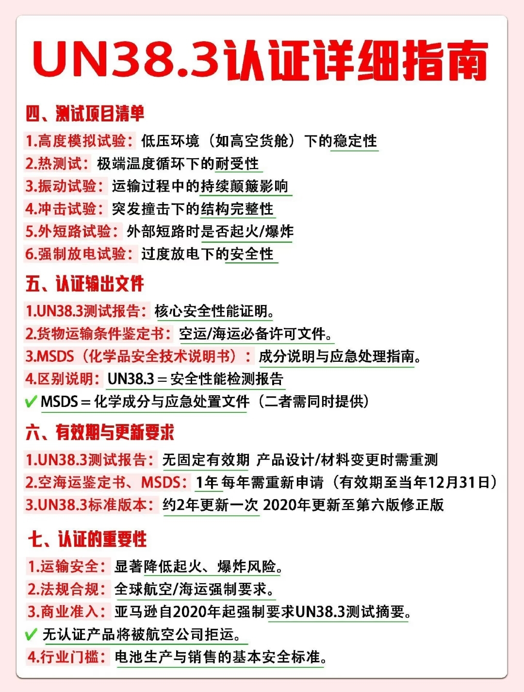

认证简介
UN38.3 是联合国《关于危险货物运输的建议书 — 试验和标准手册》第 38.3 章规定的锂电池安全检测标准。其目的是确保锂电池在航空运输过程中的安全性（防火、防爆），适用范围覆盖全球运输链条。所有锂电池产品在空运、海运前，必须通过 UN38.3 测试。
- 依据文件：联合国《关于危险货物运输的建议书 — 试验和标准手册》第 38.3 章。
- 目的：确保锂电池在航空运输中的安全性（防火、防爆），适用范围覆盖全球运输链条。
- 适用对象：所有含锂电池的产品，包括单独运输的电池（电芯/电池组）以及安装在设备中的电池。
💡 提示：UN38.3 不是产品质量认证，而是运输安全认证。即使产品已有 CE、FCC 等认证，仍需单独通过 UN38.3 测试才能进行航空/海运。
- 消费电子产品：手机、笔记本、平板电脑、蓝牙耳机电池
- 电动工具电池：电钻、电锯电池
- 新能源汽车电池：纯电动/混合动力汽车电池
- 移动电源：充电宝
📌 注：锂离子电池是认证主体，金属锂电池因危险性高极少使用。
- 提交申请
填写申请表（厂家信息、产品型号、用途等），提供电池规格书（电压、容量、充放电限制电压等参数）。 - 补充文件（如适用）
质量体系文件（ISO 证书、质量手册）、委托书（用于申请运输鉴定书）。 - 提供样品与包装信息
按数量要求寄送电池样品；提供外包装、内包装及打开状态的清晰图片。 - 实验室测试
完成 6 项强制性安全测试（详见第四部分）。 - 获取报告与证书
UN38.3 测试报告 + 空海运鉴定书 + MSDS（化学品安全说明书）。

| # | 测试项目 | 测试目的 |
|---|---|---|
| 1 | 高度模拟试验 | 模拟低压环境（如高空货舱）下的稳定性，验证电池在≤11.6kPa 低压下不会泄漏、排气、起火或爆炸 |
| 2 | 热测试 | 极端温度循环（-40°C 至 +75°C）下的耐受性，验证电池在急剧温度变化下的完整性 |
| 3 | 振动试验 | 模拟运输过程中的持续颠簸，验证电池在7Hz–200Hz 扫频振动下的安全性 |
| 4 | 冲击试验 | 模拟突发撞击（150g/6ms 或 50g/11ms 半正弦波），验证结构完整性 |
| 5 | 外短路试验 | 外部短路（≤0.1Ω）时是否起火/爆炸，验证极端情况下的安全保护 |
| 6 | 强制放电试验 | 过度放电下的安全性，验证电池在串联中单个电芯被强制放电时的表现 |

- UN38.3 测试报告：核心安全性能证明，证明电池已通过 6 项测试。
- 货物运输条件鉴定书：空运/海运必备许可文件，由民航局认可的鉴定机构出具。
- MSDS（化学品安全技术说明书）：成分说明与应急处理指南，包含电池化学组成、危险性及应急措施。
📌 区别说明：
• UN38.3 测试报告 = 安全性能检测报告（证明电池通过运输安全测试）
• MSDS = 化学成分与应急处置文件（说明电池是什么、有什么危险、如何处理）
• 二者需同时提供，不可互相替代。
• UN38.3 测试报告 = 安全性能检测报告（证明电池通过运输安全测试）
• MSDS = 化学成分与应急处置文件（说明电池是什么、有什么危险、如何处理）
• 二者需同时提供，不可互相替代。
- UN38.3 测试报告：无固定有效期。但产品设计、材料或关键部件变更时，需重新测试。
- 空海运鉴定书、MSDS：每年需重新申请，有效期至当年 12 月 31 日。
- UN38.3 标准版本：约 2 年更新一次。2020 年更新至第六版修正版，目前最新版本为 ST/SG/AC.10/11/Rev.7。
⚠️ 注意：空海运鉴定书和 MSDS 每年必须更新！过期鉴定书将导致货物被航空公司拒运。
- 🔒 运输安全：显著降低锂电池在运输过程中起火、爆炸的风险，保障人员与财产安全。
- 📜 法规合规：全球航空/海运强制要求。IATA（国际航空运输协会）和 IMDG（国际海运危险货物规则）均要求锂电池运输前通过 UN38.3 测试。
- 🛒 商业准入：亚马逊自 2020 年起强制要求卖家提供 UN38.3 测试摘要。无认证产品将被航空公司拒运，无法进入国际市场。
- 🏭 行业门槛：UN38.3 是电池生产与销售的基本安全标准，是进入全球供应链的必备条件。
需要办理 UN38.3 认证？
通跃检测为您提供一站式 UN38.3 认证服务：
👤 Mindy：mindy.liu@nbth-ha.com
👤 陆先生：yueping@nbty-ha.com